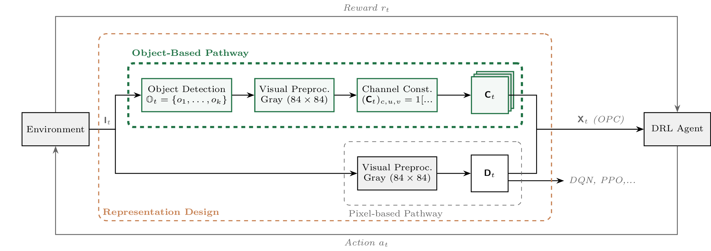
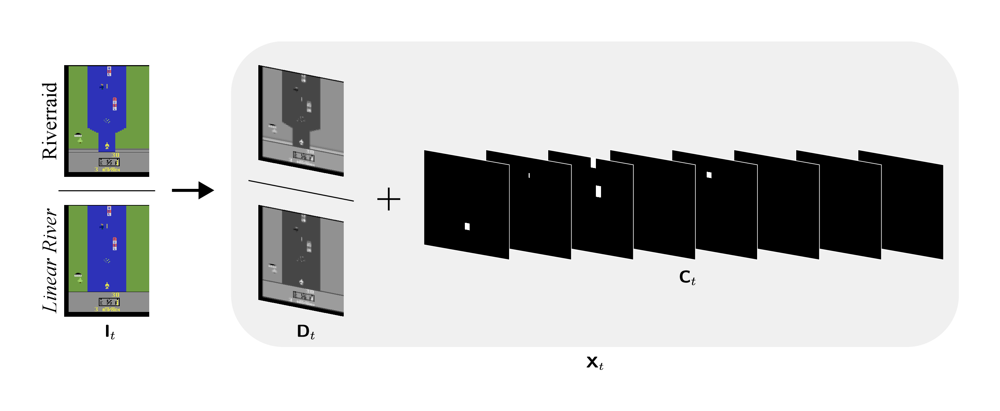
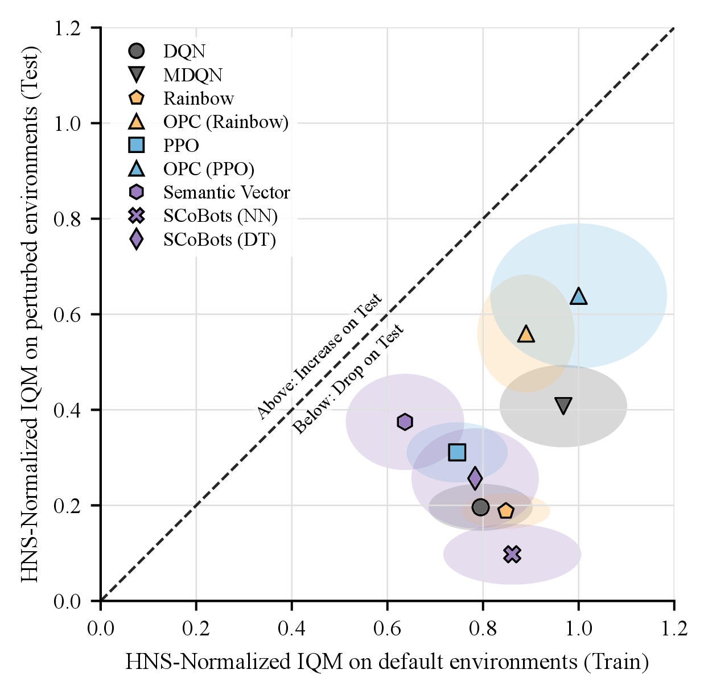
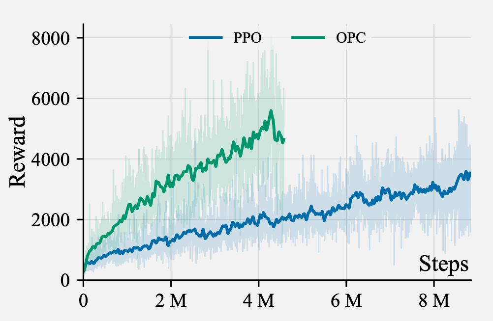

TL;DR: Spatially-grounded semantic channels (OPC) as a drop-in inductive bias against shortcut learning.
TU Darmstadt · hessian.AI · DFKI · Sorbonne Université — *equal contribution
Pixel-based RL agents are notorious for shortcut learning: they latch onto spurious visual cues instead of the game's actual mechanics, so a visual change to the screen can collapse a "trained" policy. We ask a simple question: what if we just hand the agent its objects as additional input? and study it systematically.
Object&Pixel-Channels (OPC) render each detected object category into its own binary mask, aligned pixel-for-pixel with the frame, and stack those masks alongside the usual grayscale image. No new architecture, no new loss, just a wider first conv layer. We show,
Deep RL from pixels routinely exploits spurious visual correlations, or learns shortcuts, i.e., low-entropy features that predict reward during training but have nothing to do with the task's causal structure. The canonical demonstration is Hidden-Opponent Pong (Delfosse et al., 2024): during training the opponent paddle's motion is tightly correlated with the ball, so the policy quietly uses the opponent's position as a cheap predictor of ball direction. Hide the opponent and keep identical physics as well as identical reward and the policy collapses.
| Pong variant | PPO (pixel) | OPC |
|---|---|---|
| Visible opponent | +15 | +19 |
| Hidden opponent | −18 | +18 |
The point isn't Pong specifically, as shown in HackAtari (Delfosse et al., 2024) and our work, it is a general problem. Clips show a PPO agent, trained on the original environment and zero-shot tested on a perturbation of its environment.
A natural response to this brittleness is to bias learning toward task-relevant entities rather than raw visual features. This idea is strongly aligned with cognitive science accounts of perception. An adaptation of this can be found in object-centric reinforcement learning and in adapting agents' input representations. While expressive, these methods often add training instability, computational overhead, and design complexity. Moreover, some object-centric abstractions discard the spatial inductive biases of convolutional neural networks (CNNs), such as locality and translation invariance, that we found critical for efficient visual learning.
In our work, an object is abstracted as a tuple ⟨label, (x,y), (w,h)⟩, representing a category and a bounding box. Additional information such as color, orientation and similar is removed to make extraction and adaptation easier. From the detected set we
build a binary tensor C with one channel per semantic category, each pixel inside the
bounding boxes of objects of that category set to 1, exactly aligned with the original coordinate frame.
That alignment is the whole trick. Because the masks live on the same 84×84 grid as the image, a standard
Nature-CNN processes them with the same convolutional priors (locality, translation invariance) it already
uses for pixels, which is unlike flattened symbolic vectors, throwing spatial structure away. Integration cost: widen the
first conv layer to accept |C|+1 channels. Everything else, e.g, architecture, optimizer,
hyperparameters, stays fixed, which is what lets us attribute our results to the representation alone.
Pure object channels (C) maximize invariance by discarding pixels entirely. This is great, until a
task-relevant feature isn't in the object ontology or our abstraction. In Riverraid, the riverbanks define
the navigable corridor, but OCAtari (Delfosse et al., 2024), which we use as an oracle for object extraction, doesn't treat them as objects, so a C-only agent is effectively
blind to the terrain.
| Riverraid | Pixel (Dₜ) | Object-only (Cₜ) | OPC (Xₜ) |
|---|---|---|---|
| Original | 7668 | 8020 | 9786 |
| Color Change | 441 (−94%) | 8263 (+3%) | 9644 (−1%) |
| Linear River | 6932 (−10%) | 1969 (−75%) | 9634 (−2%) |
Due to its strong performance, we propose to concatenate the grayscale pixel channel D (Mnih et al., 2015) with the object channels to build the agent's
input X = [D ; C]. The pixel channel acts as a backup: OPC keeps the
object semantics and the background geometry, and is the only representation stable across both a
cosmetic recolor and a structural river change.


X = [D ; C] in Riverraid. The frame
I (top: original; bottom: the Linear River variant) splits into a grayscale pixel channel
D and per-category binary object channels C. Sprites (player, enemies, fuel) become clean
masks; the river is a global background structure with no object.Setup: train only on the original ROM, evaluate zero-shot on HackAtari variants (10 games) PPO and Rainbow backbones. We use OCAtari (Delfosse et al., 2024) as an oracle to identify objects; As metrics we use IQM + human-normalized score with 95% stratified-bootstrap CIs over 3 seeds, agents trained for 40M frames.
On the unmodified games, OPC matches or beats pixel PPO almost everywhere with the semantic anchors help learning rather than constraining it.
| Game | PPO (pixel) | OPC | Semantic Vector |
|---|---|---|---|
| Amidar | 551 | 903 | 209 |
| Breakout | 131 | 280 | 37 |
| MsPacman | 3001 | 5931 | 1919 |
| Pong | 15 | 19 | 19 |
| Riverraid | 7668 | 9753 | 3306 |
| SpaceInvaders | 744 | 1594 | 358 |
Under distribution shifts that leave the task dynamics untouched, pixel baselines suffer a catastrophic generalization gap while OPC stays put. As an example:
The same picture holds across the suite. The symbolic Semantic Vector baseline shrugs off pure recoloring but it pays for that abstraction with weak in-distribution scores, and it collapses whenever the perturbation removes a cue it leaned on (the rendered opponent in Pong) or hides geometry its object schema never modeled (Riverraid's riverbanks). OPC is the only representation that stays high on both axes:
| Game · variant | PPO (pixel) | OPC | Semantic Vector |
|---|---|---|---|
| Boxing · recolored boxers | 95 → 4 | 96 → 97 | 93 → 91 |
| Pong · hidden opponent | 15 → −18 | 19 → 18 | 19 → −21 |
| Freeway · stop all cars | 32 → 8 | 33 → 33 | 31 → 0 |
| Riverraid · color change | 7668 → 441 | 9786 → 9644 | 3306 → 3525 |
| Riverraid · linear river | 7668 → 6932 | 9786 → 9634 | 3306 → 356 |

To rule out "OPC just has a wider first layer", we built Extendend PPO (Ex-PPO) : plain PPO whose input is widened to OPC's channel count by duplicating the grayscale channel. Ex-PPO and OPC differ only in whether the extra channels carry real object content — and Ex-PPO tracks the pixel baseline, collapsing on the same perturbations. The gain is the semantics, not the capacity.
| Game / variant | PPO | Ex-PPO | OPC |
|---|---|---|---|
| Amidar | 551 | 503 | 907 |
| Hidden-Opponent Pong | −18 | −10 | +18 |
| Riverraid · Color Change | 441 | 244 | 9644 |
| MsPacman | 3001 | 4188 | 6305 |
Input depth grows with the number of object categories |C|, so the first conv layer and GPU memory
scale ~linearly (Frostbite at 12 channels ≈ 6.2× peak memory vs pixel PPO;
throughput drops accordingly).
But under a fixed 90-minute wall-clock budget, OPC still frequently matches or beats pixel PPO despite processing fewer transitions. The semantic inductive bias takes care of the lost throughput. The cost shifts the optimization burden from discovering important elements to reasoning over them: a good trade when object sets are moderate, less so for large vocabularies (Riverraid).

| Game | #Chn | PPO | OPC |
|---|---|---|---|
| Pong | 5 | 16 | 19 |
| Breakout | 6 | 131 | 221 |
| MsPacman | 7 | 2515 | 5066 |
| SpaceInvaders | 8 | 707 | 1048 |
Some examples in which OPC produced more robust agents across the test suite, with higher or same performance on both the original and the perturbed games.
This blog covers the core idea and the headline results. The full paper digs into several things we skipped here, such as real object detectors, more games, more baselines, more seeds and confidence intervals as well as multiple small ablations.
Read the full version on OpenReview ↗ — code is available here ↗.